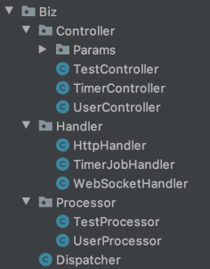

后端框架说明文档
为了帮助同学们进行大作业的后端框架，同学们可以点击链接下载
一、后端依赖
本课程的后端框架由助教搭建，为了完美运行后端框架，同学们需要安装的依赖如下：
- Java：需要的Java版本为1.8以上，框架中使用到了Java的反射机制、注解等特性，需要同学们自行学习相关内容。
- Maven：一个项目管理工具，是 Apache 下的一个纯 Java 开发的开源项目。用于管理项目的构建、生成文档、解析依赖、发布等过程。你可以使用Maven快速地引入别人开发好的Java包、自动生成Java文档、快速构建及发布Java项目。想了解更多细节请查看官方文档。
- SpringBoot：一个Java后台框架，可以简化Spring应用的搭建以及开发过程，是当前最流行的Java后端框架之一，请同学们自学Spring相关知识，主要关注AOP（面向切面编程）概念即可。
- MongoDB：一个非关系型数据库，旨在为 WEB 应用提供可扩展的高性能数据存储解决方案。MongoDB数据库按照JSON格式存储单个对象，这意味着MongoDB可以存储复杂的数据类型（如数组、字典等）。关系型数据库数据关联性强，存储格式限制性大，以致于经常需要连表查询，出现冗长的SQL语句，MongoDB通过JSON格式的存储很好地避免了这一点。同时在正常情况下MongoDB不再支持事务机制，拥有比关系型数据库更高的并发，但是MongoDB提供了一系列原子性操作，保证了数据的完整性。MongoDB是当前使用最广的非关系型数据库。想了解更多细节可以查看MongoDB相关文档，MongoDB集合在Spring中的api文档请点击此处。
- Redis：一个Key-Value存储式内存数据库，其有几大特点：①全部数据存储在内存之中，避免了磁盘操作带来的瓶颈，拥有极快的访问速度；②采用Key-Value形式存储内容，使用哈希进行索引，理论上的查询时间复杂度为O(1)级别，可以看做一个加强版的HashMap；③采用单线程处理业务逻辑（利用了I/O多路复用原则，解析请求是多线程的），保证了两个业务逻辑一定有先后顺序，不可能同时执行，不需要考虑竞争的问题。由于以上原则，Redis数据库的并发很高，比普通的硬盘数据库普遍快5倍以上，Redis数据库一般用于缓存，提高高并发下的系统运行效率。想了解更多细节可以查看Redis官方文档，同时可以参考Redis指令API文档。
- Nginx：一个高性能的HTTP和反向代理服务器，在本项目中主要使用到其端口转发和静态文件代理的功能。有Nginx文档可供大家参考。
- <!--
- Docker（唯一需要同学自己安装的依赖）：一个轻量级的虚拟化容器。Docker可以在所有系统上安装，是一个轻量级的虚拟机，用户可以在Docker容器中运行一个独立于电脑主机的新系统，然后在系统上安装依赖、修改文件等。同时容器还可以打包导出为镜像，方便他人或自己在其它电脑上导入。其作用类似于Java虚拟机，即屏蔽不同系统的底层细节，为在其中运行的程序提供统一的接口。不同的是Java虚拟机上只能运行Java程序，而Docker容器上运行的则是一个虚拟机系统，用户可以随意迁移虚拟机系统而不会报错。实现了一次配置，多次利用的功能。了解更多请参考Docker文档，安装Docker和使用可以查看Docker教程。助教已经将后端框架所需要的全部依赖都封装于Docker容器中，同学们只需要安装好Docker然后导入Course.tar镜像文件就可以直接运行后端框架了，具体操作过程请参考第四章！
- -->
以上相关内容请同学们自学为主，课堂上不会展开详细的介绍，同学们可以先掌握一个基本，主要是多实战。实战多了，坑踩多了，很多东西理解就深入了。
二、后端框架解析
2.1 目录介绍
使用IntelliJ IDEA打开项目文件，可以观察到的项目目录如下：

其中
- .idea文件夹：IDEA的配置文件夹，不需要修改，忽略。
- .mvn文件夹：Maven的配置文件夹，不需要修改，忽略。
- logs文件夹：项目配置的日志输出目录，存储着服务器的运行日志，你可以在项目设置中修改为其它的路径。
- src文件夹：项目的Java源码和资源文件所在文件夹。
- pom.xml：Maven的配置文件，如果需要修改外部依赖，则需要修改此文件。
- 其它文件：都是默认的配置文件，不需要修改，忽略。
src文件夹中存储着项目的主体：

-
test⽂件夹：存储着测试相关代码，测试的时候才有⽤，实际开发中不需要关注
-
main.java文件夹：存储项目的Java源码，都在com.flying.dragon包中。
- main.resources文件夹：存储着项目的资源文件，其中application.properties为SpringBoot配置文件，logback.xml为日志配置文件。static和templates在开发静态⽹站时⽤到，主要⽤于托管静态⽂件。
2.2 框架结构分析
如图，项目的主要代码由三大模块组成（DragonApplication是SpringBoot设置的默认的启动类，只负责启动应用，没有什么内部逻辑，不包含在模块中）：①Base基础模块；②Biz业务模块；③Frame框架模块。

如图为三大模块之间的相互关系，下面将对这三大模块展开详细的介绍。
2.2.1 Base基础模块

Base基础模块主要是为项目提供基础属性，如
-
Annotation注解：项目的所有Java注解。
-
Constant常量：项目的所有常量。
-
Enum枚举：项目中的所有枚举，报错、警告和业务枚举不在此中。
-
Error错误：项目中所有的报错，包括警告和错误的枚举类。
-
Model模型：项目中所有的模型，模型与数据库中的文档一一对应，当对象从数据库中读取出来会自动映射到对应的模型类中。
值得一提的是，Base基础模块中都是静态数据，没有动态代码，Biz业务模块和Frame框架模块都可以利用到这些数据。
2.2.2 Frame框架模块
Frame框架模块搭建了项目的整体框架，并为Biz业务模块的业务运行提供了必需的工具，如：
- Aspect切面：定义了项目中的所有切面（切面意义请自行学习Spring），切面可以控制业务的具体执行流程，如LogInAspect切面将判断用户是否登录和具有对应权限，有对应权限则执行对应业务，否则通过报错中断业务的执行。
- Config配置：定义了项目中的所有配置，这些配置是项目运行的基础，没有了这些配置，项目会运行不起来。WebSocketConfiguration配置了WebSocket监听端口，让后端可以处理WebSocket请求；而RedisConfig配置则配置了与Redis数据库的连接，让用户可以连接并处理Redis缓存。
- Util工具：定义了所有的工具类，这些类是被Biz业务模块广泛使用的，但又与业务逻辑无关的。这些工具类也都是助教以前在其它项目中使用过的。如RedisUtil工具类封装了对Redis数据库的便捷操作，封装的函数非常多，是以前的项目有这么多需求，所以写了这么多，这次只不过是复制粘贴过来了，所以里面的内容很全。相对于Biz业务模块与业务高度相关的代码，这部分的代码具有极强的可复用性，换言之，这些工具类换了一个项目也可以继续使用，不需要被替换。具体每个工具类的作用可以查看相关注解。
2.2.3 Biz业务模块

Biz业务模块是项目中最核心的部分，Base基础模块和Frame框架模块都是为Biz业务模块提供服务的，项目中所有的业务逻辑譬如用户登录、用户注册、注销登录等都在Biz业务模块中处理。业务模块有四⼤组件： - Handler组件：处理所有的外部请求，对外部请求进⾏封装，然后转发到分发器Dispatcher中。 - Dispatcher组件：业务分发器，负责根据不同的业务参数输⼊，将不同的业务请求派发到对应的Controller处理逻辑之中。 - Controller组件：业务第⼀层处理组件，接受Dispatcher分发的业务并具体处理业务、返回处理结果。其中Params为业务的⼊参及出参，不与MongoDB数据库进⾏交互。 - Processor组件：业务第⼆层处理组件，负责执⾏原⼦逻辑，直接与MongoDB数据库进⾏交互，提供接⼝给第⼀层业务处理组件Controller层，具有⾼度的可复⽤性。如根据⽤户名获取⽤户、删除⼀个⽤户、增加⼀个⽤户，这些都是原⼦逻辑。
外部请求统一由Handler接受，然后转发给Dispatcher，Dispatcher再派发给Controller，由Controller调用Processor接口完成业务逻辑处理，这四个部分的关系如下图所示：
外部的请求必须经过Handler然后封装为Controller.Params， Params如下图所示：
所有的参数类都继承⾃CommonParams类，此抽象类中封装了所有参数的通⽤操作。 CommonInParams和CommonOutParams直接继承⾃CommonParams类，是所有⼊参和出参的⽗类，所有⼊参和出参都必须是这两个类或者这两个类的⼦类。你可以针对不同的业务定制不同的⼊参或者出参，但是必须继承⾃此两类。 CommonInParams是Controller层业务函数的参数， CommonOutParams是Controller层业务函数的返回值。 ⼀个成功的业务Http请求（⽤户登录） 在Biz层中的处理逻辑如下图所示：
具体的处理细节可以查看相关源码加深理解。
2.3 框架特性介绍
本框架内容追求高度模块化的原则，系统可扩展性极强，不管是小型系统开发还是大型系统开发都可以在此框架基础上拓展完成，是一个不错的Java服务器框架。在刚开始写代码的时候，同学们可能会感觉内部逻辑复杂，因为代码模块较多，新增一个业务可能需要修改多个模块。但是随着代码量的增加，业务的复杂程度不断上升，此框架良好的扩展性就会发挥作用，此框架可以保证大量的业务扩展而很难发生内部逻辑紊乱，这一点同学们可以在实际开发中慢慢体会。
此外，框架中封装了Quartz定时任务组件，同学们可以调用此组件完成服务器的定时任务。同时增加了Logback日志系统，方便同学追踪用户行为、定位服务器内部错误，日志的具体配置文件是resources/logback.xml。感兴趣的同学甚至还可以在日志系统的基础上配置日志监控，将日志内容图表化，可以更方便地统计自己的各业务执行状态，配置方式请自行搜索ELK(ElasticSearch + Kibana + Logstash)了解。
三、后端编程规范
3.1 业务逻辑规范
业务逻辑规范分为不可违背和推荐性两大块，不可违背业务逻辑规范一旦被违背，则代码得分将大大降低，推荐性业务规范视完成程度酌情给分。
3.1.1 不可违背的业务逻辑规范
- 所有外部请求必须经过Entrance处理，然后交由Dispatcher派发，才能转入内部执行，严禁任何外部请求绕过Entrance和Dispatcher转入内部执行，避免业务执行逻辑混乱。
- Dispatcher派发的请求只能派发给第一层业务处理逻辑Manager层执行，严禁将业务派发给第二层Processor层，避免业务派发逻辑混乱。
-
Manager层业务执行函数的入参必须是CommonInParams或其子类，出参必须是CommonOutParams或其子类，这么做是为了规范业务入参和出参的格式，保证日后查看业务逻辑时不会出现出入参的紊乱。Processor层的出参和入参随意。
-
Manager层可以调用Manager和Processor层的函数，Processor层只能调用Processor层的函数，严禁Processor层调用Manager层的函数，避免调用逻辑层级的混乱。
- 硬盘数据库(Mongodb)数据只能通过Processor层直接访问，严禁Manager层直接访问硬盘数据库，缓存数据库(Redis)随意，避免硬盘数据库操作逻辑混乱。
- 所有可能出现报错的业务逻辑都应该被try-catch包裹并处理，严禁出现任何不可能被捕获的异常，且必须记录异常日志，避免内部异常带来的业务逻辑混乱。同学们如果新增Entrance逻辑需要保证满足这一条原则。
- 所有的自定义报错均需列举在枚举类中（可参考SystemErrorEnum和UserWarnEnum示例），方便日后追溯根源。
3.2.2 推荐性的业务逻辑规范
- 执行关键操作时记录日志，方便根据日志追踪用户行为。
- 尽量将可复用的、需多次重复使用的、与业务无关的处理逻辑封装在Frame框架模块的Util工具包中，方便日后复用。
3.2 代码书写规范
- 代码应该书写工整，利用换行符、空格符保证代码的可读性，出现冗长的单行代码是较大的扣分项。
- 每个类、类中的每个字段和方法（除get和set方法）都需要有对应的注释说明，方法中如果代码量较多，也应该分块予以注释说明。
- 代码整体组织结构需要按照Base基础模块、Frame框架模块和Biz业务模块的三大模块原则来进行，且每个类应该按照相关性放在对应的包中。实际上框架已经帮大家分好模块和包了，基本上只需要在框架已有的包上进行扩展即可。